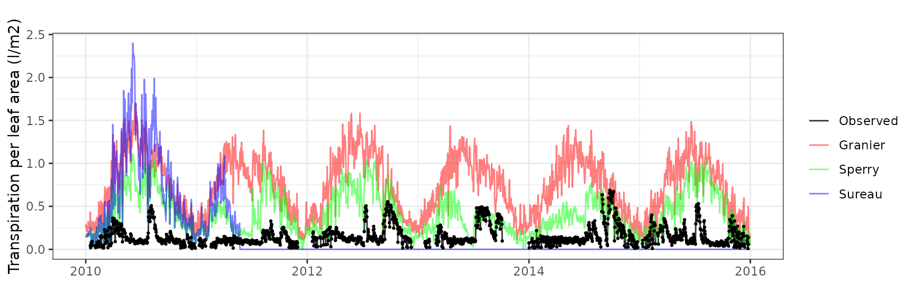
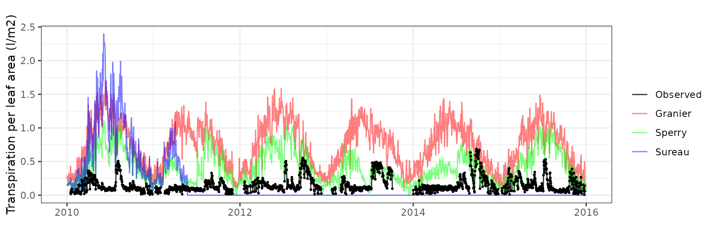

Model evaluation in experimental plots
Miquel De Cáceres (CREAF), Víctor Granda (CREAF), Rafael Poyatos (CREAF), Teresa Gimeno (CREAF), Nicolas Martin-StPaul (INRAE), Antoine Cabon (WSL), Vincenzo Saponaro (U. Tuscia)
2024-03-27
Source:vignettes/evaluation/StandLevelEvaluation.Rmd
StandLevelEvaluation.RmdIntroduction
This document presents medfate (ver. 4.0.0) model evaluation results at stand-level, using data from a set of 1 experimental forest plots. The main source of observed data are SAPFLUXNET database (Poyatos et al. 2021) and FLUXNET 2015 dataset (Pastorello et al. 2020).
List of sites
The table below lists the experimental forest plots used in the report and the data sources available.
| Country | Plot | Stand | SAPFLUXNET | FLUXNET/ICOS |
|---|---|---|---|---|
| Switzerland | Lötschental | Mixed evergreen Norway spruce and deciduous European larch forest | CHE_LOT_NOR |
Parametrization and simulations
Forest water balance simulations (i.e. function spwb())
have been conducted using the three transpiration modes
(i.e. Granier, Sperry or
Sureau).
The set of control parameters modified from defaults in simulations are the following:
| transpirationMode | stemCavitationRecovery | leafCavitationRecovery | segmentedXylemVulnerability | subdailyResults |
|---|---|---|---|---|
| Granier | rate | total | NA | NA |
| Sperry | rate | total | TRUE | FALSE |
| Sureau | rate | rate | FALSE | FALSE |
Soil characteristics have been tuned to modulate total available water and fit observed saturation and residual moisture values, but calibration exercises have not been conducted. When available, however, local leaf area to sapwood area ratios have been used. Thus, the evaluation exercise is meant to be more or less representative of simulations with default species-level trait data.
Evaluation variables
The table below lists the set of predicted variables that are evaluated and the data sources used:
| Variable | Level | Observation source | Units |
|---|---|---|---|
| Sensible heat turbulent flux | Stand | FLUXNET / ICOS | MJ/m2 |
| Latent heat turbulent flux | Stand | FLUXNET / ICOS | MJ/m2 |
| Gross primary productivity | Stand | FLUXNET / ICOS | gC/m2 |
| Soil moisture content (topsoil) | Stand | SAPFLUXNET / FLUXNET / ICOS | % vol. |
| Transpiration per leaf area | Plant | SAPFLUXNET | l/m2 |
| Predawn/midday leaf water potential | Plant | SAPFLUXNET (addition) | MPa |
Structure of site reports
The following contains as many sections as forest stands included in the evaluation. The following sub-sections are reported for each stand:
- General information: General information about the site, topography, soil and climate, as well as data sources used.
- Model inputs: Description of model inputs (vegetation, soil, custom species parameters and parameterization remarks).
- Climate: Graphical description of climate inputs and predicted soil/canopy temperatures (under Sperry).
- Evaluation results: Evaluation results are presented for variables with available measurements.
LOTSCHENTAL
General information
| Attribute | Value |
|---|---|
| Plot name | Lötschental |
| Country | Switzerland |
| SAPFLUXNET code | CHE_LOT_NOR |
| SAPFLUXNET contributor (affiliation) | Patrick Fonti (WSL) |
| FLUXNET/ICOS code | |
| FLUXNET/ICOS contributor (affiliation) | |
| Latitude (º) | 46.3918 |
| Longitude (º) | 7.7613 |
| Elevation (m) | 1300 |
| Slope (º) | 36.87 |
| Aspect (º) | 0 |
| Parent material | Calcareous |
| Soil texture | Loam |
| MAT (ºC) | 5 |
| MAP (mm) | 716 |
| Forest stand | Mixed evergreen Norway spruce and deciduous European larch forest |
| Stand LAI | 3 |
| Stand description DOI | 10.1016/j.agrformet.2012.08.002 |
| Species simulated | Picea abies, Larix decidua subsp. decidua |
| Species parameter table | SpParamsFR |
| Simulation period | 2013-2016 |
| Evaluation period | 2013-2016 |
Model inputs
Vegetation
| Species | DBH | Height | N | Z50 | Z95 | LAI |
|---|---|---|---|---|---|---|
| Larix decidua subsp. decidua | 30.76667 | 1910.000 | 345.8887 | NA | NA | 1.417577 |
| Picea abies | 38.60000 | 1783.333 | 385.5873 | NA | NA | 1.580276 |
Soil
| widths | clay | sand | om | bd | rfc | VG_theta_sat | VG_theta_res |
|---|---|---|---|---|---|---|---|
| 300 | 23.60 | 42.43333 | 6.896667 | 1.140 | 45 | 0.28 | 0.07 |
| 700 | 22.05 | 46.25000 | 2.560000 | 1.415 | 80 | 0.28 | 0.07 |
| 1000 | 22.80 | 46.10000 | 2.350000 | 1.490 | 90 | 0.28 | 0.07 |
| 2000 | 22.80 | 46.10000 | 0.000000 | 1.490 | 99 | 0.28 | 0.07 |
Custom traits
| Species | Kmax_stemxylem | Al2As | LeafAngle | LeafAngleSD |
|---|---|---|---|---|
| Larix decidua subsp. decidua | 20 | 3823.303 | 30 | 21 |
| Picea abies | NA | 1975.000 | 42 | 2 |
Remarks
| Title | Remark |
|---|---|
| Soil | Taken from SoilGrids with theta_sat and theta_res modified |
| Vegetation | Understory not considered. LAI not available |
| Weather | Complemented with weather station in the same valley for Radiation, Precipitation and WindSpeed (2013-2016); and all variables for 2016 |
| Soil moisture | Provided by A. Cabon |

Evaluation results
Soil moisture content
| Site | Mode | n | Bias | Bias.rel | MAE | MAE.rel | r | NSE | NSE.abs |
|---|---|---|---|---|---|---|---|---|---|
| LOTSCHENTAL | granier | 1262 | 0.0429853 | 26.63668 | 0.0535833 | 33.20393 | 0.5757466 | -0.1902239 | -0.0010538 |
| LOTSCHENTAL | sperry | 1262 | 0.0281202 | 17.42521 | 0.0460419 | 28.53073 | 0.6563360 | 0.1929109 | 0.1398370 |
| LOTSCHENTAL | sureau | 1262 | 0.0392322 | 24.31100 | 0.0544833 | 33.76163 | 0.5739323 | -0.1125942 | -0.0178676 |


Transpiration per leaf area
| Site | Cohort | Mode | n | Bias | Bias.rel | MAE | MAE.rel | r | NSE | NSE.abs |
|---|---|---|---|---|---|---|---|---|---|---|
| LOTSCHENTAL | T1_1955 | granier | 572 | -0.3569553 | -59.322870 | 0.4171310 | 69.32356 | 0.4194345 | -0.6091603 | -0.1995324 |
| LOTSCHENTAL | T1_1955 | sperry | 572 | -0.3105325 | -51.607810 | 0.3674125 | 61.06077 | 0.5295368 | -0.3486674 | -0.0565583 |
| LOTSCHENTAL | T1_1955 | sureau | 572 | -0.2581362 | -42.899994 | 0.3811814 | 63.34905 | 0.3851750 | -0.4353038 | -0.0961532 |
| LOTSCHENTAL | T2_2601 | granier | 695 | 0.0298494 | 10.989531 | 0.1526598 | 56.20409 | 0.5110315 | 0.1783211 | 0.1735799 |
| LOTSCHENTAL | T2_2601 | sperry | 695 | 0.3360072 | 123.706273 | 0.3880165 | 142.85429 | 0.5126256 | -4.9694234 | -1.1005173 |
| LOTSCHENTAL | T2_2601 | sureau | 695 | 0.0194962 | 7.177812 | 0.1661677 | 61.17721 | 0.4568203 | -0.0954093 | 0.1004555 |
 
